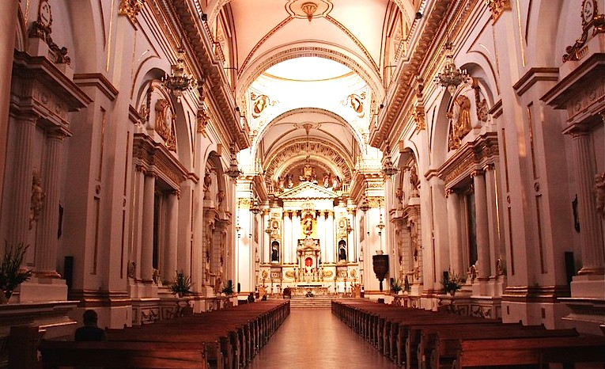
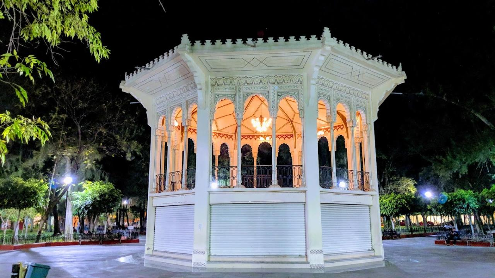

El Templo de Nuestra Santísima Virgen del Monte Carmelo, más conocido como Templo del Carmen es un templo católico perteneciente a Celaya, siendo así parte de los edificios religiosos más famosos y principales de la ciudad, junto al Templo de San Francisco y la Catedral. Lo que actualmente conocemos como el Templo fue construido y remodelado por el gran arquitecto, pintor y escultor perteneciente a Celaya Francisco Eduardo Tresguerras.

Este hermoso parque fue construido en 1724 haciéndolo un centro de reuniones familiares y sociales ciertamente importante. Este es un parque emblemático con grandes áreas verdes, senderos, espacios para eventos culturales y artísticos, fuentes y lagos artificiales y mucho más. Este es un magnifico lugar en el que puedes pasear, leer realizar picnic, realizar actividades físicas o cualquier otra actividad que desees.

Este parque fue elaborado por la familia pape los mismos que le dieron inauguración en 1988. El parque tiene tres secciones la sección deportiva el cual contiene canchas de futbol, baloncesto y volibol también cuenta con áreas para correr, ciclovías, la sección creativa cuneta con un lago artificial para pasear en lancha, tirolesa, áreas de descanso y área de juegos infantiles y, por último, pero no menos importante la sección cultural también conocida como xhimhai la cual está enfocada en la ciencia y la cultura.

Este jardín fue fundado en 1607, su estructura parecida a un zócalo es de 1868, anteriormente se conocía como plaza de armas hasta el 15 de septiembre su nombre fue remplazado. Este es una gran plaza, siendo esta la más grande de Guanajuato, este bello jardín tiene unos arboles frondosos, bellos setos y césped también cuenta con un kiosco hexagonal en el centro.
Si requiere mayor informacion CONSULTE AQUI: